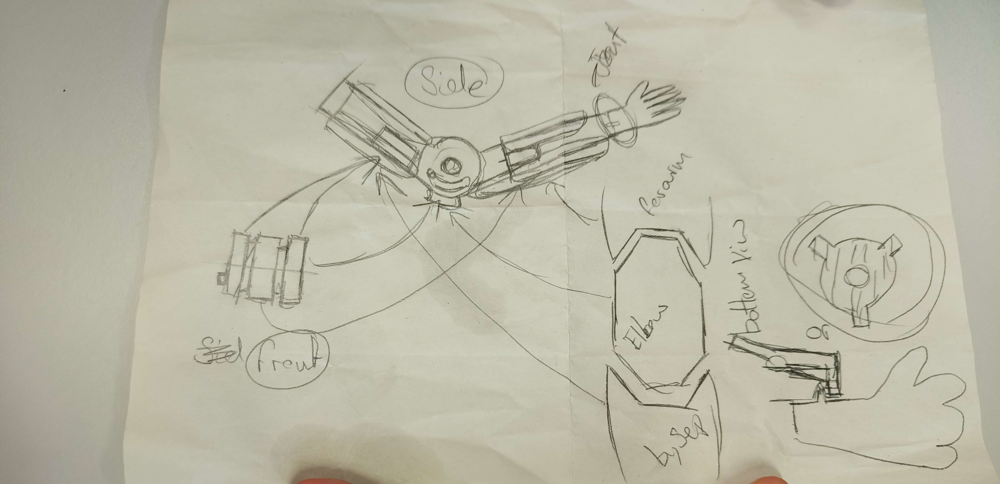

Hello im Zach,
I am a Ai and Robotics student at staffordshire uni..
Overview
This page will document the creation of a prostetic like arm through the use of differnt technology such as 3D scanning, 3D printing, CAD and resin casting

intial desighn for the elbow joint and other arm aspects
stage 1: 3D Scanning
stage 1 is the 3D scanning of an arm to then be used as a size reference for the upcoming endoskeleton that will made in the future. the model shown below has had to be decimated using blender due to file size restrictions on this platform
To 3D scan the arm we utilised a camera based 3D scanner that allowed us to have a accurate model of my arm that would then allow us to begin working on the design for the mechanism.
After scanning the model was decimated in blender to reduce the file size of the model this allowed for it to both be easeyer to work with and allow me to upload it to GitHub
Stage 2: Moddeling
Stage 2 is the manipulation of the 3D scanned model in Autodesk Fusion 360
By using Autodesk Fusion 360 we can vary easily both import the arm model and create functional desighns
Above is the splitting of the model and the removal of the aria that the mechanism will be located the connection scheme also depicted by the rings next to the meshes that will then be atteched to the meshes themselves
Below is the mechanism that will makeup the elbow joint and the attached conectors along with the hollowing of the model to make the next step of the process both easier and cheaper
The additional functionality built into Fusion allowed for the quick creation of hightly accurate spure gears that
Stage 3: 3D Printing
Stage 3 is the process of 3D printing the mechanism and the arm sections
The Use of a standard FDM or Fused deposition modeling 3D printer allowed me to take the CAD file and turn it into reality. to make 3D rinting easyer when making the CAD file i made it so the majoroty of componants where flat allowing for multiple shorter easeyer prints, Though the downside to this is that some assembily is requred after printing.
Additional Technologys
In addition to the technologys used above, others where considerd for the project some some that would be used in future developments and others that wouldnt suit the project
Resin Printing
Resin 3D printing was looked at however it was deemed unsutible for this project as the items created by a resin printer though high in detail are limited by the build volume of the printer
Silicone Casting
Another technology looked at was silicone and resin casting. By using silicone we would have be able to add a synthetic skin to the arm, this idea however would have to be scrapped due to time constraints and delays causing the use of silicone to become unfeasible, it would however be something that i would like to have a look at attempting in the future.
Haptic Pen
During the modeling stage of the project we could have used the haptic pen to edit the 3D scanned model, however due to the model needing to be decimated there was no point in adding extra detail plus the model was already in an acceptable state already
Next Steps
About Me
I am a student at Staffordshire university, i am currently studying Artificial intelligence and Robotics. My personal interest is in smart prosthesis and wish to produce a robotic hand that utilises 3D printing and of the shelf hardware to reduce it cost whilst increasing the capability of the hand. Recently with a group from my university I spent a month in Vietnam more specifically Hanoi city immersing myself in the environment and the culture, Vietnam is a beautiful country that I would love to go back to(image above from my time in Vietnam).
Contact
w019746l@student.staffs.ac.uk
ztmwells@outlook.com